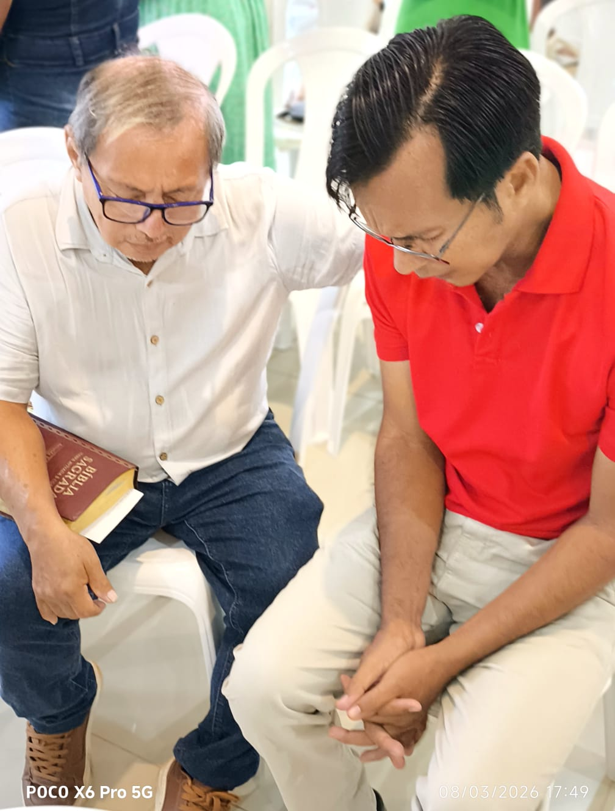

Forjando caráter, liderança e propósito através da palavra de Deus. Um lugar para homens que buscam excelência em todas as áreas da vida.
O ministério Maranata Homens nasceu do desejo de restaurar o papel do homem na família, na igreja e na sociedade. Acreditamos que a verdadeira força não reside no poder, mas na submissão à vontade de Deus.
Nosso foco é desenvolver líderes que amam suas famílias como Cristo amou a igreja, profissionais íntegros e amigos leais que caminham juntos em transparência.
Unidos em um só propósito.
Integridade inegociável.

Estruturas desenhadas para o desenvolvimento integral do homem cristão através do discipulado intencional.
Pequenos grupos que se reúnem semanalmente em casas para comunhão, oração e estudo bíblico aplicado à vida real.
Acompanhamento individual com líderes experientes para questões específicas de vida e fé.
Módulos mensais focados em doutrinas fundamentais e defesa da fé no mundo contemporâneo.
Aprendizado prático sobre finanças, criação de filhos, casamento e carreira sob a perspectiva bíblica.
Momentos de celebração e impacto coletivo.
Nenhum encontro cadastrado no momento. Consulte a página de Eventos para novidades.
O homem é chamado para servir. Descubra onde você pode empregar seus talentos e força para o Reino.
Suporte prático em todos os eventos da igreja, montagem e organização.
Frente de apoio a famílias carentes e projetos de reconstrução comunitária.
Zelo pela segurança e recepção durante os cultos e grandes eventos.

Servindo a comunidade com trabalho voluntário
Em breve, compartilharemos aqui relatos reais de homens da igreja sobre essa caminhada.


Planeje sua participação nos próximos eventos. O crescimento requer consistência e presença.
Nenhum encontro cadastrado no momento. Consulte a página de Eventos para novidades.
Não caminhe sozinho. Junte-se a outros homens que estão redescobrindo sua identidade em Cristo.